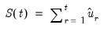
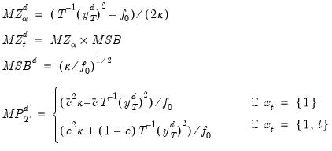

|
|
|
The theory behind ARMA estimation is based on stationary time series. A series is said to be (weakly or covariance) stationary if the mean and autocovariances of the series do not depend on time. Any series that is not stationary is said to be nonstationary.A common example of a nonstationary series is the random walk:
) where
is the order of integration. The order of integration is the number of unit roots contained in the series, or the number of differencing operations it takes to make the series stationary. For the random walk above, there is one unit root, so it is an I(1) series. Similarly, a stationary series is I(0).
The following discussion assumes that you are familiar with the basic forms of the unit root tests and the associated options. We provide theoretical background for these tests in “Basic Unit Root Theory”, and document the settings used when performing these tests.To begin, double click on the series name to open the series window, and choose View/Unit Root Tests/Standard Unit Root Test…You can click on OK to compute the test using the specified settings, or you can customize your test using the advanced settings portion of the dialog.The ADF statistic value is -1.417 and the associated one-sided p-value (for a test with 221 observations) is .573. In addition, EViews reports the critical values at the 1%, 5% and 10% levels. Notice here that the statisticvalue is greater than the critical values so that we do not reject the null at conventional test sizes.
Lastly, you can control the lag length or bandwidth used for your spectral estimator. If you select one of the kernel estimation methods (Bartlett, Parzen, Quadratic Spectral), the dialog will give you a choice between using Newey-West or Andrews automatic bandwidth selection methods, or providing a user specified bandwidth. If you choose one of the AR spectral density estimation methods (AR Spectral - OLS, AR Spectral - OLS detrended, AR Spectral - GLS detrended), the dialog will prompt you to choose from various automatic lag length selection methods (using information criteria) or to provide a user-specified lag length. See “Automatic Bandwidth and Lag Length Selection”.Once you have chosen the appropriate settings for your test, click on the OK button. EViews reports the test statistic along with output from the corresponding test regression. For these tests, EViews reports the uncorrected estimate of the residual variance and the estimate of the frequency zero spectrum(labeled as the “HAC corrected variance”) in addition to the basic output. Running a PP test using the TBILL series using the Andrews bandwidth yields:
A word of caution. You should note that the critical values reported by EViews are valid only for unit root tests of a data series, and will be invalid if the series is based on estimated values. For example, Engle and Granger (1987) proposed a two-step method of testing for cointegration which looks for a unit root in the residuals of a first-stage regression. Since these residuals are estimates of the disturbance term, the asymptotic distribution of the test statistic differs from the one for ordinary series. See “Cointegration Testing” for EViews routines to perform testing in this setting.
from both sides of the equation:

-values for arbitrary sample sizes. The more recent MacKinnon critical value calculations are used by EViews in constructing test output.
-ratio (42.24). An important result obtained by Fuller is that the asymptotic distribution of the
-ratio for
is independent of the number of lagged first differences included in the ADF regression. Moreover, while the assumption that
follows an autoregressive (AR) process may seem restrictive, Said and Dickey (1984) demonstrate that the ADF test is asymptotically valid in the presence of a moving average (MA) component, provided that sufficient lagged difference terms are included in the test regression.
Second, you will have to specify the number of lagged difference terms (which we will term the “lag length”) to be added to the test regression (0 yields the standard DF test; integers greater than 0 correspond to ADF tests). The usual (though not particularly useful) advice is to include a number of lags sufficient to remove serial correlation in the residuals. EViews provides both automatic and manual lag length selection options. For details, see “Automatic Bandwidth and Lag Length Selection”.
for the original
:
-ratio of the
coefficient so that serial correlation does not affect the asymptotic distribution of the test statistic. The PP test is based on the statistic:
-ratio of
, is coefficient standard error, and
is the standard error of the test regression. In addition,
is a consistent estimate of the error variance in (42.22) (calculated as , where
is the number of regressors). The remaining term,
, is an estimator of the residual spectrum at frequency zero.
There are two choices you will have make when performing the PP test. First, you must choose whether to include a constant, a constant and a linear time trend, or neither, in the test regression. Second, you will have to choose a method for estimating. EViews supports estimators for
based on kernel-based sum-of-covariances, or on autoregressive spectral density estimation. See “Frequency Zero Spectrum Estimation” for details.
The asymptotic distribution of the PP modified-ratio is the same as that of the ADF statistic. EViews reports MacKinnon lower-tail critical and p-values for this test.
 and a method for estimating
. See “Frequency Zero Spectrum Estimation” for discussion.
The ERS Point Optimal test is based on the quasi-differencing regression defined in Equations (42.27). Define the residuals from (42.27) as , and let be the sum-of-squared residuals function. The ERS (feasible) point optimal test statistic of the null thatagainst the alternative that , is then defined as:
and a method for estimating
(see “Frequency Zero Spectrum Estimation”).

and a choice of method for estimating
(see “Frequency Zero Spectrum Estimation”).
is a bandwidth parameter (which acts as a truncation lag in the covariance weighting),
is a kernel function, and where , the j-th sample autocovariance of the residuals
, is defined as:
that EViews uses in estimating the autocovariance functions in (42.40) will differ depending on the specified unit root test:
is of considerable importance. EViews allows you to specify a fixed parameter or to have EViews select one using a data-dependent method. Automatic bandwidth parameter selection is discussed in “Automatic Bandwidth and Lag Length Selection”.
are the estimates from (42.41). We note here that EViews uses the non-degree of freedom estimator of the residual variance. As a result, spectral estimates computed in EViews may differ slightly from those obtained from other sources.
Not surprisingly, the spectrum estimator is sensitive to the number of lagged difference terms in the auxiliary equation. You may either specify a fixed parameter or have EViews automatically select one based on an information criterion. Automatic lag length selection is examined in “Automatic Bandwidth and Lag Length Selection”.
for the kernel-based estimators of
. For the kernel estimators, EViews provides you with the option of using the Newey-West (1994) or the Andrews (1991) data-based automatic bandwidth parameter methods. See the original sources for details. For those familiar with the Newey-West procedure, we note that EViews uses the lag selection parameter formulae given in the corresponding first lines of Table II-C. The Andrews method is based on an AR(1) specification. (See “Automatic Bandwidth Selection” for discussion.)
. Ng and Perron (2001) propose and examine the modified criteria, concluding with a recommendation of the MAIC.
 has a constant forecast value, conditional on
has a constant forecast value, conditional on  , and the variance is increasing over time. The random walk is a difference stationary series since the first difference of
, and the variance is increasing over time. The random walk is a difference stationary series since the first difference of  is stationary:
is stationary: are to be included in the ADF test equation. You may choose to let EViews automatically select
are to be included in the ADF test equation. You may choose to let EViews automatically select  , or you may supply a fixed positive integer value. If you choose automatic selection, you will be given options for specifying both the lag selection method and maximum number of lags to be used in the selection procedure.
, or you may supply a fixed positive integer value. If you choose automatic selection, you will be given options for specifying both the lag selection method and maximum number of lags to be used in the selection procedure.
 , that is used in constructing the particular test statistic. As before, you only need pay attention to these settings if you wish to change from the EViews defaults.
, that is used in constructing the particular test statistic. As before, you only need pay attention to these settings if you wish to change from the EViews defaults. . The entry labeled “Default” will show you the default estimator for the specific unit root test—in this example, we see that the PP default uses a kernel sum-of-covariances estimator with Bartlett weights. Alternately, if you had selected a NP test, the default entry would be “AR spectral-GLS”.
. The entry labeled “Default” will show you the default estimator for the specific unit root test—in this example, we see that the PP default uses a kernel sum-of-covariances estimator with Bartlett weights. Alternately, if you had selected a NP test, the default entry would be “AR spectral-GLS”.  are optional exogenous regressors which may consist of constant, or a constant and trend,
are optional exogenous regressors which may consist of constant, or a constant and trend,  and
and  are parameters to be estimated, and the
are parameters to be estimated, and the  are assumed to be white noise. If ,
are assumed to be white noise. If ,  is a nonstationary series and the variance of
is a nonstationary series and the variance of  increases with time and approaches infinity. If
increases with time and approaches infinity. If  ,
,  is a (trend-)stationary series. Thus, the hypothesis of (trend-)stationarity can be evaluated by testing whether the absolute value of
is a (trend-)stationary series. Thus, the hypothesis of (trend-)stationarity can be evaluated by testing whether the absolute value of  is strictly less than one.
is strictly less than one.  . The null and alternative hypotheses may be written as,
. The null and alternative hypotheses may be written as, -ratio for
-ratio for  :
: , and is the coefficient standard error.
, and is the coefficient standard error. is violated. The Augmented Dickey-Fuller (ADF) test constructs a parametric correction for higher-order correlation by assuming that the
is violated. The Augmented Dickey-Fuller (ADF) test constructs a parametric correction for higher-order correlation by assuming that the  series follows an AR(
series follows an AR( ) process and adding
) process and adding  lagged difference terms of the dependent variable
lagged difference terms of the dependent variable  to the right-hand side of the test regression:
to the right-hand side of the test regression: that depends on the value
that depends on the value  representing the specific point alternative against which we wish to test the null:
representing the specific point alternative against which we wish to test the null: contains either a constant, or a constant and trend, and let be the OLS estimates from this regression.
contains either a constant, or a constant and trend, and let be the OLS estimates from this regression. . ERS recommend the use of , where:
. ERS recommend the use of , where: are detrended, we do not include the
are detrended, we do not include the  in the DFGLS test equation. As with the ADF test, we consider the
in the DFGLS test equation. As with the ADF test, we consider the  -ratio for
-ratio for  from this test equation.
from this test equation. -ratio follows a Dickey-Fuller distribution in the constant only case, the asymptotic distribution differs when you include both a constant and trend. ERS (1996, Table 1, p. 825) simulate the critical values of the test statistic in this latter setting for . Thus, the EViews lower tail critical values use the MacKinnon simulations for the no constant case, but are interpolated from the ERS simulated values for the constant and trend case. The null hypothesis is rejected for values that fall below these critical values.
-ratio follows a Dickey-Fuller distribution in the constant only case, the asymptotic distribution differs when you include both a constant and trend. ERS (1996, Table 1, p. 825) simulate the critical values of the test statistic in this latter setting for . Thus, the EViews lower tail critical values use the MacKinnon simulations for the no constant case, but are interpolated from the ERS simulated values for the constant and trend case. The null hypothesis is rejected for values that fall below these critical values. is assumed to be (trend-) stationary under the null. The KPSS statistic is based on the residuals from the OLS regression of
is assumed to be (trend-) stationary under the null. The KPSS statistic is based on the residuals from the OLS regression of  on the exogenous variables
on the exogenous variables  :
: , is an estimator of the residual spectrum at frequency zero and where
, is an estimator of the residual spectrum at frequency zero and where  is a cumulative residual function:
is a cumulative residual function: used in this calculation differs from the estimator for
used in this calculation differs from the estimator for  used by GLS detrending since it is based on a regression involving the original data and not on the quasi-differenced data.
used by GLS detrending since it is based on a regression involving the original data and not on the quasi-differenced data. , is an estimator of the residual spectrum at frequency zero.
, is an estimator of the residual spectrum at frequency zero. .
. . These test statistics are modified forms of Phillips and Perron and
. These test statistics are modified forms of Phillips and Perron and  statistics, the Bhargava (1986)
statistics, the Bhargava (1986)  statistic, and the ERS Point Optimal statistic. First, define the term:
statistic, and the ERS Point Optimal statistic. First, define the term: : kernel-based sum-of-covariances estimators, and autoregressive spectral density estimators.
: kernel-based sum-of-covariances estimators, and autoregressive spectral density estimators. . The following table summarizes the auxiliary equation estimated by the various AR spectral density estimators:
. The following table summarizes the auxiliary equation estimated by the various AR spectral density estimators: , and , .
, and , . .
. . In all of these cases,
. In all of these cases,  lagged difference terms are added to a regression equation. The automatic selection methods choose
lagged difference terms are added to a regression equation. The automatic selection methods choose  (less than the specified maximum) to minimize one of the following criteria:
(less than the specified maximum) to minimize one of the following criteria:
 is computed as:
is computed as: